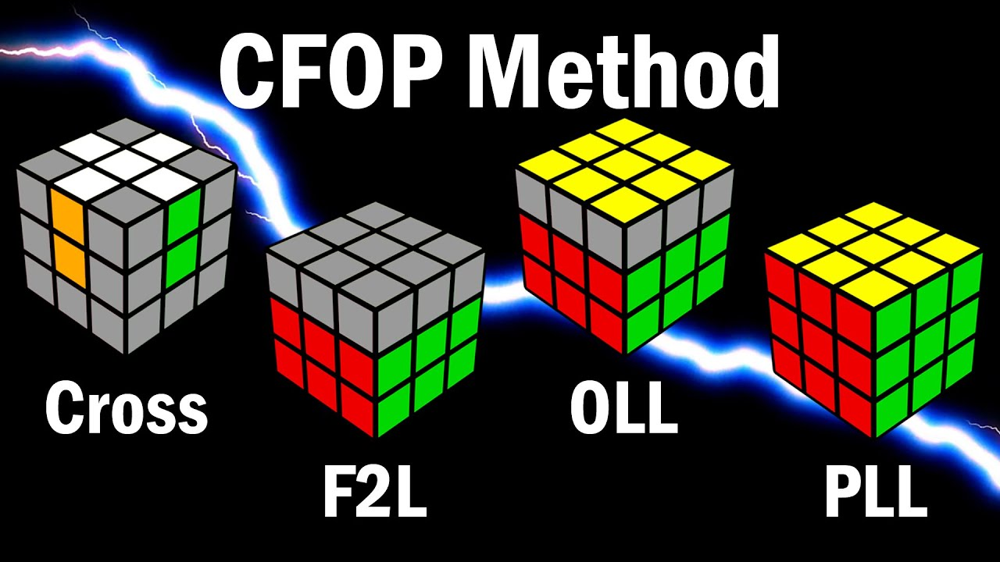
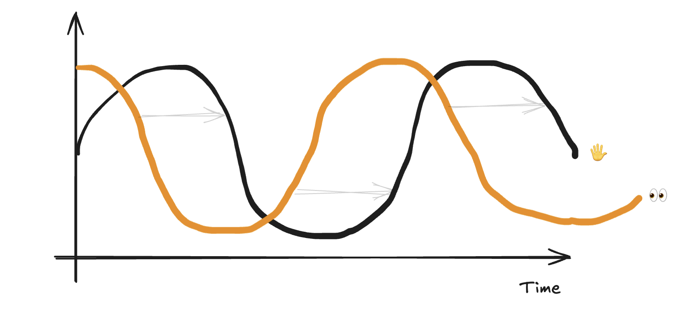

两年魔方速拧路，体验优化的艺术
魔方速拧之路
走上魔方速拧路既是机缘巧合，也是冥冥之中天意使然。2022 年 8 月 28 日，我见到郑天晴坐在地上摔打奶奶给她买的玩具魔方，忽然回忆起高中班上有个同学能在 3 分钟内复原一个魔方，令同学们既赞叹又羡慕，我心中的少年之火在这一瞬间被点燃，决定也试上一试。于是我找到了博主 LeesRandomVids 制作的保姆级教学视频「How to Solve a Rubik's Cube, Step by Step Beginners Tutorial on Solving a 3x3 Rubik‘s Cube」，边看边学，很快便完成了人生首次三阶魔方复原！
在实现了大众最朴素的魔方复原梦后，我有些意犹未尽。首先，我真的很好奇像我这样「聊发少年狂」的普通中年大叔经过刻意练习后能在多短的时间内复原一个魔方？其次，平时带娃的时间太琐碎，如何在这琐碎的时间中不靠手机来持续获得一点点满足感？魔方速拧一把不过两三分钟，恰好能填补这些时光缝隙。于是我在 2022 年 8 月 22 日录下了第一个魔方复原视频，复原用时 2 分 34 秒，然后便以此作为复原时间的基准参考值，设定下一个目标「1 分 30 秒」！
要将复原时间缩短 1 分钟，靠自己摸石头过河效率太低，还是得找个老司机带带。经过一番搜寻终于找到了速拧世界冠军「Feliks Zemdegs」的系列教程 — CubeSkills。此外，YouTube 上坐拥 175 万粉丝的魔方速拧博主 J Perm 制作的一些魔方速拧视频也深得我心。值得一提的是，J Perm 的真名是 Dylan Wang，在许多速拧比赛中也取得过很不错的成绩。至此，我的两位老师也已就位，剩下的就是「把我的手弄脏」。
2022 年 9 月 4 日，只用了不到一周时间，我便实现了 1 分 30 秒内完成复原的目标，并录下了第二个魔方复原视频。这个阶段的提升主要来自于手速的提升和装备的更新，但这种提升很快就到达瓶颈，无论我如何加速，复原时间总是在 1 分 30 秒左右波动。这时候我的魔方复原过程就好比是用小汤勺舀水，手速再快也依然很慢。
于是我继续制定新目标，并开始学习更复杂的技术。从那以后，每次我出门书包里必须要放一个魔方，它的地位大致与手机、电脑相当。不论是上班通勤还是周末出行，我与魔方几乎形影不离。平时上班通勤时间较长且比较固定，我会在路上拧半个小时；周末生活安排比较灵活，但无论是带娃、办事还是下馆子等位，只要得闲就会随手掏出魔方，旁若无人地拧起来。兴许你曾经在北京周末的公园、商场、医院或者公交上看见过一个三十多岁大叔拧魔方的身影，如果你的运气足够好，那个人就可能是我。
一切技能的锤炼过程都逃不出「边际收益递减」的诅咒。处在越高的水平，上升一个台阶就要花费越多的时间和精力。从「1 分 30 秒」到「1 分钟」，我耗时两个月，从「1 分钟」到「30 秒」则用了两年。实现「十次平均在 30 秒内完成魔方复原」这一壮举时已是 2024 年 8 月 18 日。在这段枯燥而漫长的时光中，除了体会到复原魔方的即时满足感外，我还体验到许多优化的艺术。
体验优化艺术
魔方复原框架：CFOP
人在观察理解复杂事物和过程时，会本能地通过结构和框架来简化，进而把复杂度降低到脑力能处理的范围之内。复原魔方也有固定的框架，时下最流行的框架就是 CFOP。

在 CFOP 框架下，复原魔方分 4 步：
- Cross：十字
- F2L (First 2 Layers)：底部两层
- OLL (Orientation of the Last Layer)：顶面复原
- PLL (Permutation of the Last Layer)：顶层复原
确定步骤后就可以分而治之，对每一步分别做针对性优化。以 Cross 为例，新手先要学习在顶层上复原白色十字，选择在顶面上复原白色十字是为了便于新手观察魔方，时刻可以关注到白色十字的构造进度。但是在顶层复原白色十字后接 F2L 需要翻转魔方，这个翻转本身就十分耗时，而且不利于玩家观察模仿。这时候就到了 Cross 的第二阶段：练习在底层复原白色十字，即在看不到十字的情况下复原十字。完成这一步骤后，下一步就该练习如何在拧魔方前预先观察好十字相关的棱块和中心块的位置，在 8 步内完成 Cross，从每次观察 1 组棱块和侧面中心块，到每次 2 组、3 组甚至 4 组，最终达到在观察后拿起魔方便能根据预判好的步骤以极快的速度在底部复原十字。
在 Cross 练到一定的程度后，就可以依次进入 F2L、OLL 和 PLL 的练习，逐渐优化每个步骤的复原速度。从 F2L 开始玩家就需要记一些复杂公式，要追究更快的复原效率就要记更多的公式。比如 CubeSkills 给出的完整 F2L 公式就有 37 个，但如果只是想完成 F2L 而不记效率，记住 2 个对称的公式就足够了。我目前的复原技术就是建立在熟记 CubeSkills 教程提供的 OLL 和 PLL 的全部 79 个公式及 10+ 个 F2L 公式的基础之上。
在分别把 CFOP 各个步骤练习到一定程度后，就要开始进入更精细的优化。比如前瞻，既包括各个步骤内部的前瞻也包括步骤之间的前瞻。做 F2L 时，复原一组角块和棱块的同时可以观察下一组甚至后面两组角块和棱块的位置以及准备实施相应的公式；从 F2L 到 OLL 时，可以通过一些技巧提前控制即将出现的 OLL 模式；又比如多角度模式识别，在做 PLL 各种情况的模式识别时，由于我们在观察魔方时始终有 2 个面看不到，这时候就要学会从不同角度识别同一种情况，甚至要为了同一种情况的不同角度学习不同的公式，从而减少顶层旋转的时间消耗；再比如手指技巧和双手配合，每个玩家的手掌大小不同，手指力量不同，左右手的均衡程度不同，都需要根据具体情况针对性地练习或选择比较合适的公式。但基本原则不会变，左右手交替比单手连续快，不同指头交替比单指连续快。再精细一些的甚至还会关注公式之间的手型衔接等。
以上仅仅是我对 CFOP 魔方复原优化过程的一点理解。有关 CFOP 以及优化技巧的更详细介绍，我就不在这里班门弄斧了，我的两位老师以及网上的各路神仙早就为大家准备好了精心设计、撰写和录制的文本和音视频资料，只需我们用好搜索引擎即可。接下来我想谈谈在练习魔方速拧过程中的几个有意思的认知。
破旧立新

上面中这条歪歪扭扭的黑色曲线是我根据自己的实践过程绘制的「魔方复原时间」与「训练时间」的关系近似图，姑且称之为「魔方速拧优化曲线」。它的整体趋势趋近于一个逐渐变缓的下坡，即魔方复原时间随着训练时间的增加而逐渐变短，但缩短的趋势越来越小，这个现象就是上文提到的「边际收益递减」的诅咒。如果不对复原技术本身进行改善，而是纯靠提升手速，复原时间缩短到一定程度后就很难再变化，如图中的黄色曲线所示。这时候就需要引入新的技术，但破旧立新的过程是很痛苦的，玩家既要舍弃过去一段时间积累的肌肉记忆，还要忍受一段时间成绩的下降。在新方法还掌握得不够纯熟之前，玩家的成绩很难超越之前取得的成绩，甚至在极高的水平上破旧立新需要极强的耐心和毅力才能等到品尝胜利果实的那天。这就像姚明改变罚篮节奏，刘翔改变攻栏技术，苏炳添改变起跑技术。在这个过程中，于我个人最大的磨练就是接受和习惯延迟满足，比如复原顶层的技术（OLL+PLL）从四步复原（4-Look-Last-Layer）到两步复原（2-Look-Last-Layer），因为每天投入的时间有限，整个过程持续了半年多，即便如此，因为有了前头 F2L 整整一个月的练习经历，我对此也算是司空见惯了。英文中有一句俗语叫「Slow down to speed up」，和这破旧立新的道理大致相当。
眼先于手
魔方速拧十分考验手眼之间的配合，而且很有意思的是：越顶尖的玩家，眼睛和手越不同频，他们的眼睛总能领先于手。玩家的眼睛和手随着时间的变化就像两组振幅相同，周期相同，但相位不同的三角函数曲线，眼睛在 t 时刻就要看见 t + φ 时刻的手（以及魔方）的状态。这个 φ 存在的最终目的是为了让玩家能够在步骤之间的切换变得更加流畅，从而让整个复原过程一气呵成。

如果你是七龙珠的死忠，也许你会想到「龙珠超」系列中悟空对战第六宇宙的希特时，正是采用这种「眼先于手」的法门。
公式与对称之美
J Perm 曾经用一个视频「How Algorithms Actually Work on the Rubik’s Cube」介绍自己对公式的理解。在视频中，J Perm 提到，三阶魔方一共有 43,252,003,274,489,856,000 种状态，而你只需要 20 步旋转就可以将魔方从复原状态变换到其中的任意一种状态。这种复杂度已经远远超出人脑能处理的极限，因此即便对于一个魔方速拧的顶尖高手而言，理解每个公式如何将魔方从 A 状态转换到 B 状态绝无可能。记住 A 和 B 以及转换公式，忽略每一步细节，这就是人类在处理复杂性时的惯用伎俩。我恰好是一名软件工程师，复杂软件的开发迭代其实也是复杂度管理的艺术，如何让工程师在开发中关心最少的细节正是一个工程项目在技术上成功的关键。
在练习魔方速拧之前，我曾经在 Brilliant 上囫囵吞枣地学习过一门群论的入门课，虽然大部分内容都已经遗忘，但群论中关于对称性的认知还是深深地刻在了我的脑海里。群论把我们高中学习过的镜面对称、点对称、旋转对称做了进一步抽象，当我们对一个物体做若干次相同的变换后，这个物体能恢复到最初的样子，那这个物体就具备一定的对称性。魔方不就是这样的一个物体？而每个公式不就是一个变换？所以每当我学习一个新公式，我必做的一件事就是不断的重复这个公式，看重复多少次以后魔方能恢复原状，最快的时候两次即可恢复原状，最多则需要几十次。在这个过程中，我能够不断地感受到魔方的对称之美，就像小时候翻花绳一样乐此不疲。
人在面对复杂而无法理解的现象时，就会产生美感。三阶魔方的千变万化让我望而生畏，因为恰好在接触魔方之前学过一点三脚猫的群论功夫，让我具备了欣赏魔方对称性的部分能力，这正好给了我一扇似乎能窥探到魔方世界奥秘的窗，这大概满足了康德眼中美感的形成条件。
感受无用的乐趣
从讨生活的角度上看，魔方速拧十有八九是一门「无用」的技术，但「无用」通常与「有趣」相伴。托魔方的福，我成为了北京地铁上的小孩「杀手」，无论男孩、女孩，中国小孩还是外国小孩，只要看到我在地铁上聚精会神地拧魔方，孩子们的小眼睛就忽然进入了一种磁场，直勾勾地盯着我的手。每当我复原一次魔方，他们就会惊叹万分，然后使劲儿拍旁边玩着手机的家长，说一些我光看嘴唇就能读懂的话「那个叔叔好厉害！他几十秒就把魔方复原了」！每每遇到这些小孩，我都波澜不惊地心中暗爽，当年在高中班上没有得到的，如今终于在北京地铁六号线和十号线上实现了。
（完）